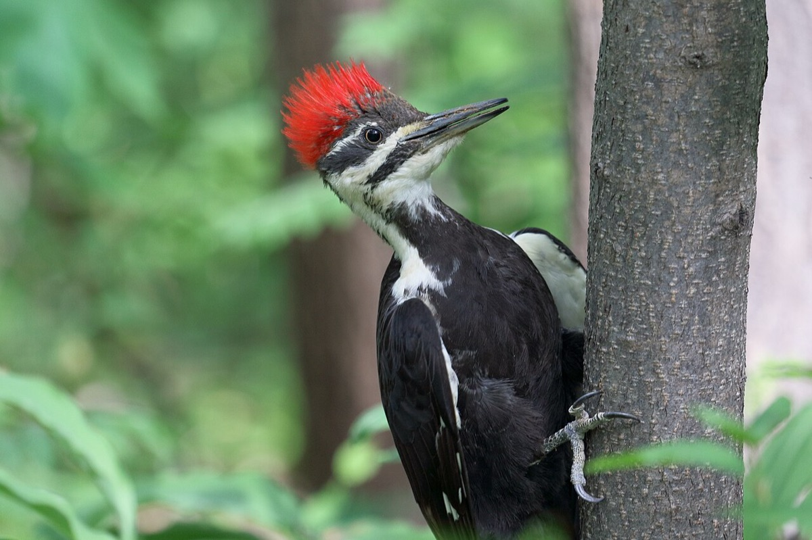
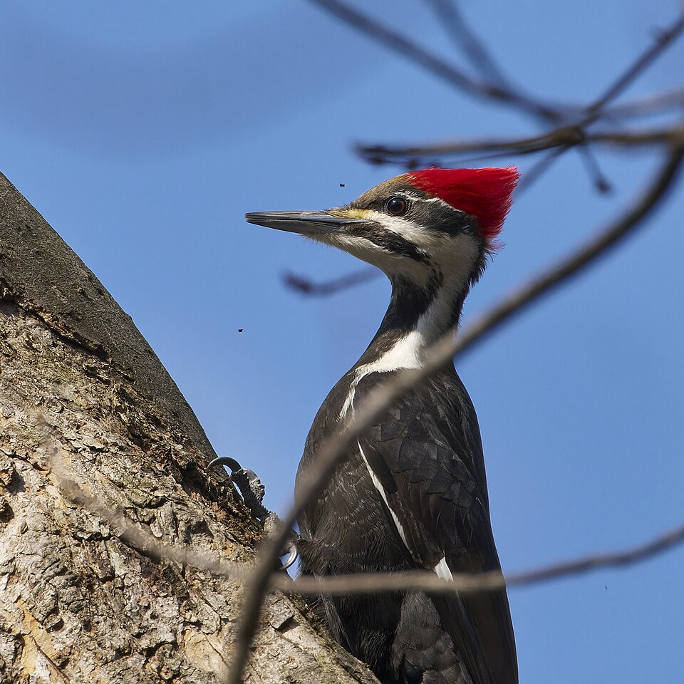

Pileated Woodpecker
Dryocopus pileatus


Listen
Call: a 5-second clip, cut from a 5-second recording (trimmed, with a short fade-out, and saved as a small MP3), so it plays without an internet connection. Recording by Jonathon Jongsma, CC BY-SA 3.0, on Wikimedia Commons, where the whole recording is (an internet connection is needed to open it).
- Kind
- bird · Picidae
- Native to Vermont
- yes
- Legal status
- No special legal status found (checked 2026-10-30).
Names
Pileated woodpecker, Dryocopus pileatus. A crow-sized woodpecker that lives in Vermont all year and depends on dead and dying trees.
Range and habitat
Mature deciduous and mixed forest, especially large hardwood tracts, and wooded parks with tall trees (Wikipedia). Not migratory; a pair keeps its territory all year. The department lists it as an associated animal in several of its forest natural community fact sheets (northern hardwood, hemlock-northern hardwood, red oak-northern hardwood and floodplain forests).
How to identify (by season; look-alikes and the key difference)
- Crow-sized, 16 to 19 inches, wingspan 26 to 30 inches; mostly black with a red crest, a white stripe down the side of the throat, and white wing patches that show in flight.
- Adult males have a red line from the bill to the throat; in females it is black. Juveniles have less curved crests.
- Voice: "woick" courtship calls and "cuk" alarm calls; a slow, deep drumming roll lasting about 3 seconds (a short display drum is about 10 taps).
Through the year
Dates are typical for Vermont and shift with elevation and year; "approximate" means the source gave a season and the dates are a translation of it.
| When | What | Look for | What to do | Dates |
|---|---|---|---|---|
| Mar 20 to Jun 15 | nesting (watch) | Work on the nest hole begins in early spring and eggs are laid in late spring (three to five, incubated 12 to 16 days by both parents; young may take about a month to fledge). The pair drums, a slow deep roll of about 3 seconds, to proclaim territory. | approximate | |
| Dec 1 to Feb 28 | sign (watch) | The pair stays on its territory all year. With leaves down, look for large, roughly rectangular holes chipped into dead or dying trees by birds hunting carpenter ants and wood-boring beetle larvae. | approximate |
Signs on the land (tracks, scat, browse, nests, holes, calls)
- Large, roughly rectangular holes chipped into trees while hunting insects, especially carpenter ant colonies.
- A nest cavity in a dead tree, unlined except for wood chips; the birds sometimes forage on the ground around fallen dead trees.
Role in the forest (what it eats, what eats it, what it needs)
Mainly insects such as carpenter ants and wood-boring beetle larvae; also fruits, nuts and berries. The cavities it excavates are used later by other animals (the department notes that ducks may use them in floodplain forest).
What helps it thrive (light, soil, shelter, food and the trees it uses)
Large snags, old trees and downed wood: the targets from the Landowner's Guide are in the Managing section above (at least six cavity, snag or decadent living trees per acre, with one over 18 inches and three over 16 inches; four snags of 6 inches or more per acre is a US Forest Service figure for woodpeckers in the Northeast). Its main foods are carpenter ants and wood-boring beetle larvae, which live in dead and decaying wood, so a supply of dead wood is food as well as shelter. Chapter 6 of the Guide notes that old forest, over 100 years, tends to have high levels of woody material on the ground and cavity trees, which pileated woodpeckers use.
Managing for it (habitat practices) and living with it (conflicts and damage)
The department's guidance for snags and den trees (not specific to this species):
- Manage for at least six cavity, snag and/or decadent living trees per acre on average, with one exceeding 18 inches DBH and three exceeding 16 inches (den tree section); the forest bird section says at least six snags or cavity trees per acre, one larger than 18 inches, two larger than 16 inches, and four downed trees per acre. A US Forest Service figure cited for woodpeckers in the Northeast: four snags of 6 inches or more per acre.
- Look for den-tree candidates: broken-off tops and large branches, old scars, conks and existing cavities. Prefer hardwoods with cavities in the upper trunk (they stay intact longer); keep a mix of diameters. Where snags are scarce, consider girdling trees or leaving unhealthy trees to become snags.
- Near water, try to leave two or more large den trees per acre within 300 feet of lakes and ponds; keep six or more snags of 15 inches or larger within 300 feet of openings, ponds and lakes.
- Safety: standing dead trees are a hazard; consult a forester familiar with Vermont OSHA logging guidelines before cutting near unsound trees; cluster snags in riparian zones and wetlands, away from roads and trails. If a snag must be felled, leave it on the ground as downed wood habitat.
- Leave slash and down woody material; it feeds the insects woodpeckers eat.
Legal status
No special status found. State and federal migratory bird law protects nesting birds in general.
Sources
- Vermont Fish & Wildlife Department, A Landowner's Guide (complete PDF): den trees and snags (part one), forest birds (chapter 6): https://vtfishandwildlife.com/sites/fishandwildlife/files/documents/Learn%20More/LandownersGuide/Landowner-Guide-Complete.pdf
- Wikipedia, Pileated woodpecker: https://en.wikipedia.org/wiki/Pileated_woodpecker
- Vermont Fish & Wildlife Department, Birds of Vermont list and natural community fact sheets
- Vermont Fish & Wildlife Department, A Landowner's Guide, Wildlife Habitat Management for Lands in Vermont, chapter 6 (Forest Songbirds): https://vtfishandwildlife.com/sites/fishandwildlife/files/documents/Learn%20More/LandownersGuide/Landowner-Guide-Complete.pdf
Vermont Woodland Owner's Reference, built 2026-11-10. Rules and dates here are summaries, not legal advice; dates shift with elevation and year. Photo and recording credits · The text is by Loop Works, CC BY 4.0 (pictures and recordings keep their own licenses)